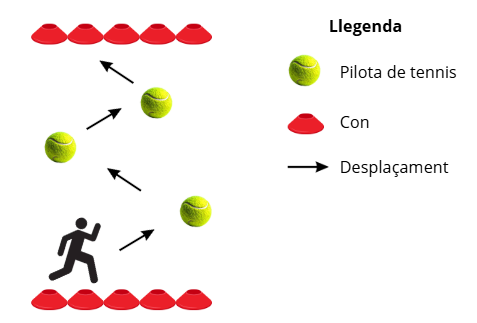

Nom de la tasca
Recolectors equilibristes.
Un repte d'estabilitat, control postural i coordinació a través del joc i el moviment.
Recolectors equilibristes.
3ª infància, concretament, a l’inici d’aquesta (6-8 anys).
Àmbit educatiu.
4 participants.
Augmentar l’equilibri a una cama, mantenint l'estabilitat mentre se salta i s'agafa un objecte sense recolzar l'altre peu.
Millorar el control postural mantenint un objecte sobre el cap sense utilitzar les mans.
Millorar la coordinació i el control dels moviments, mantenint la pilota dins del con durant el desplaçament.
Treballar la precisió mentre es camina, desplaçant-se sobre superfícies inestables i separades sense tocar el terra.
Desenvolupar l'equilibri, la força i la coordinació, fomentant alhora la cooperació i la confiança entre companys.
La tasca tracta d’un joc en el qual els participants han de creuar d’una banda a una altra de l’espai fent equilibri i recollint objectes que es trobaran pel camí. Segons la variable, han de creuar d’una manera o d’una altra:
Creuar saltant a peu coix sobre una cama i ajupir-se sense recolzar l'altre peu per agafar l'objecte. Es treballa el nivell superior (a peu coix).
Desplaçar-se amb un con al cap (amb la base del con mirant cap a dalt) sense tocar-lo amb les mans.
Creuar agafant un con gran per la punta i amb una pilota de bàsquet dins el forat de la base del con.
Creuar trepitjant exclusivament per sobre de totxanes de plàstic separades entre si, sense poder tocar el terra en cap moment per agafar l'objecte.
Per parelles, es desplacen fent el carretó (un company camina amb les mans i l’altre li acompanya agafant-li els peus). Un cop creuen, tornen al principi i s’intercanvien els rols.

Pavelló amb terra de parquet de 20 × 20 metres.
Assegurar que l’espai estigui lliure d’objectes i amb el material ben recollit, adaptar la dificultat a les capacitats dels alumnes i evitar empentes i desplaçaments bruscos.
Explicar clarament les normes i com realitzar l’activitat i fomentar la comunicació entre els companys (variable 5).
Garantir que tots els participants realitzen les activitats i motivar als alumnes per a que puguin superar les activitats.